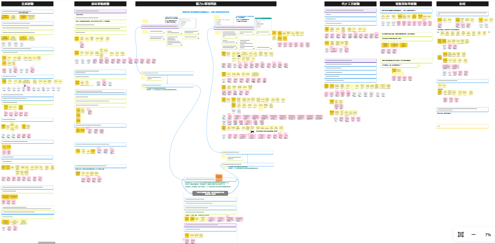
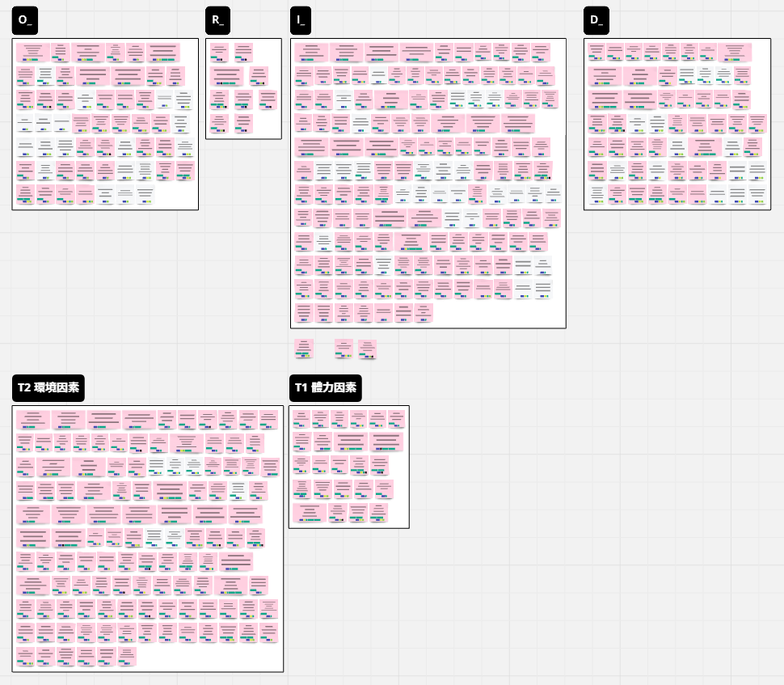
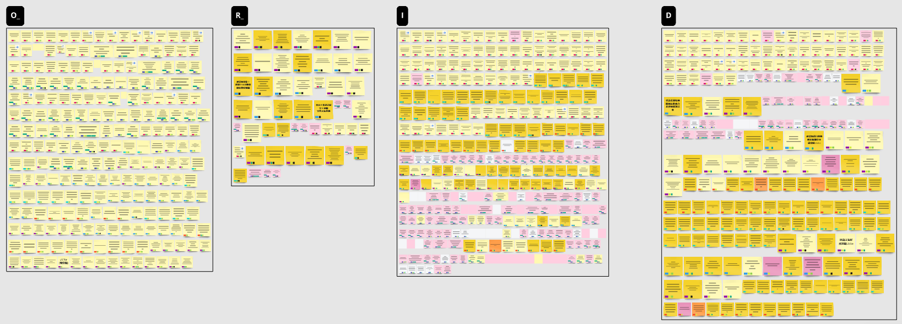
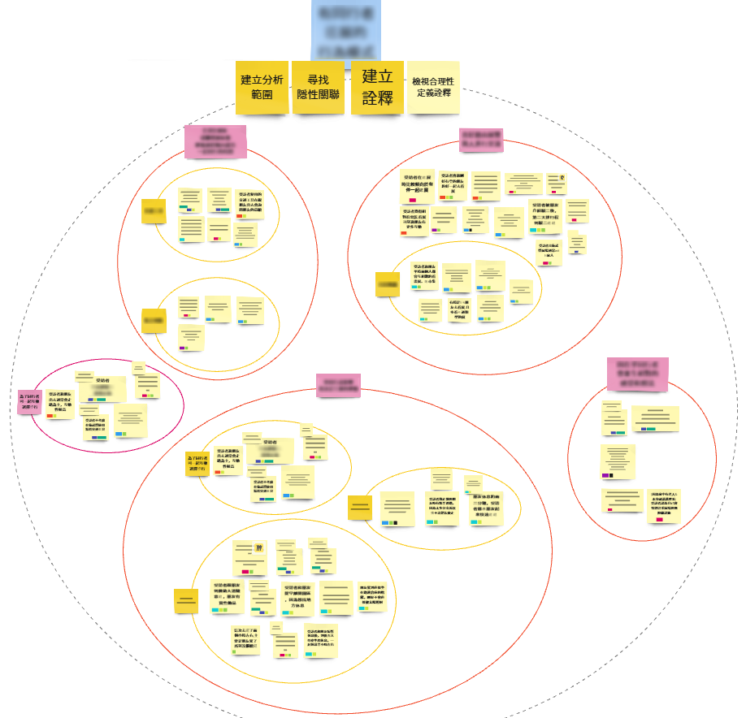
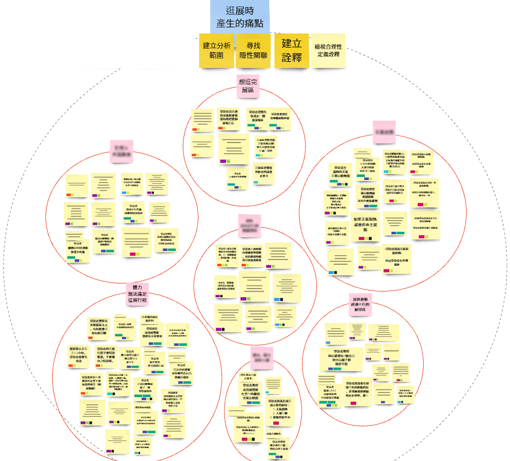
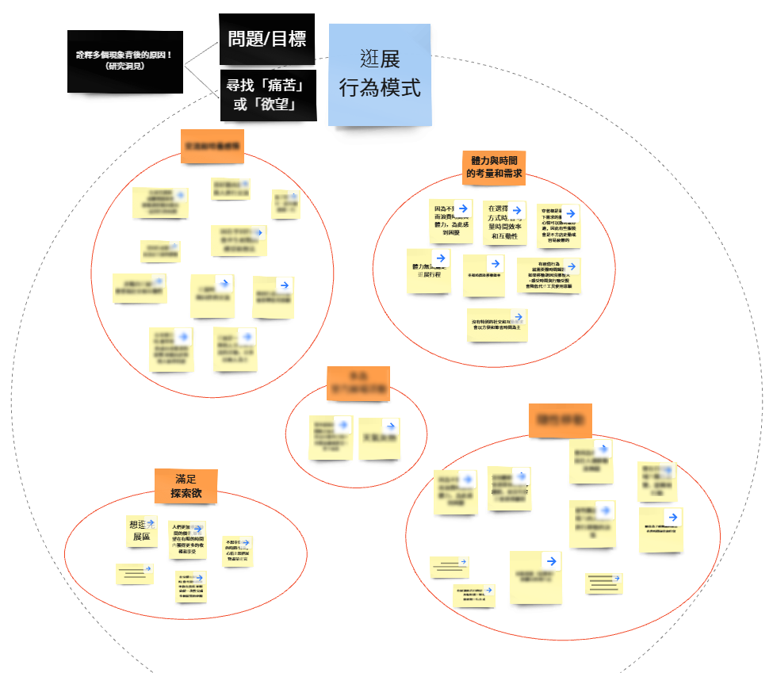
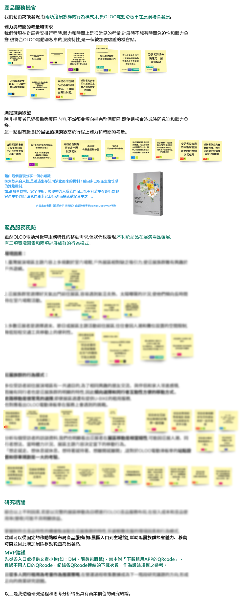
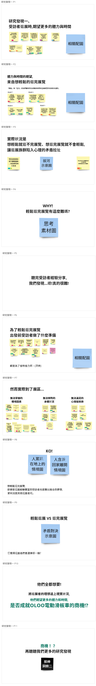

UXR市場研究 研究成果
資料整理
發現洞見
研究發表
一、清洗訪談資料
將訪談記錄篩選出具研究目標相關之內容，
以一項獨立事件之文字描述為單位
，
將事件依「客觀事實的明確關係」、「感受、決策、想法的因果關係」
切片成句子
。
個人負責所清洗之資料。
含有客戶(oloo)保密內容，僅展示縮圖。

二、編碼事件切片
以「切片人員姓名」、「受訪者代號」、
「研究議題」、「ORID屬性」進行編碼
，後續作系統性分類方便發現洞見。
含有客戶(oloo)保密內容，僅展示縮圖。

已瀏覽完
UXR市場研究案 資料整理
接續瀏覽
發現洞見
一、彙整資料
團隊彙整共六位受訪者訪談的切片內容。
含有客戶(oloo)保密內容，僅展示縮圖。

二、觀察資料共同性
觀察切片內容從中定義共通性主題，以「親合圖」模式匡列其中，成員之間以「六頂思考帽」方式進行思辨驗證。
以個人觀察所定義為例。
此範圍受客戶(oloo)肯定，能有新的角度切入市場，
並設為保密內容。

此範圍中「想逛完展區」、「個人體力無法滿足形成」、「展區移動超過步行耐受度」
受團隊成員認同被選為簡報內容，客戶同樣肯定
並同意公開此研究成果。

三、發現洞見
彙整團隊所定義的共通性主題
，進行第二層「親合圖」，探討各詮釋
共同的痛點、需求
，
讓已知事情有新的認識、補充細節，讓未知事情被注意和認知，最後形成研究洞見
啟發成商業機會、風險。
以個人觀察所詮釋為例。
第二層「親合圖」

成員以「親合圖」論述研究洞見進行交流，統整後續簡報內容。
以個人論述為例
，當中多數受團隊成員認同作為簡報架構。

對客戶(oloo)保密內容已模糊化處理。
已瀏覽完
UXR市場研究案 發現洞見
接續瀏覽
成果呈現
說明
根據研究目標和預期為方向，呈現研究洞見作為成果發表，
以「
描述洞見內容→資料來源和證明根據→結論和行動建議」
為架構，鋪陳成果作為簡報內容。
一、簡報草稿
先以標題、文字內容排整架構，方便接續「討論→修改→定稿」。
以個人編寫範圍為例。
逛展族群「體力與時間的需求和考量」

二、製作簡報
前往簡報內容(可公開部分)
已瀏覽完
UXR市場研究案 成果呈現